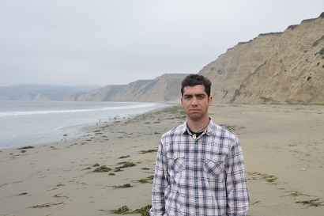

Gothic Sun is a state of being in the exceptional stoic. It is the smiling sunshine of imagination against a dying world. It is creativity springing from meaninglessness. Foresight in the darkness. Grand perspective when time is dwindling.
My name is Gus Morcate. I am a Computer Science graduate of Southwestern College Kansas. I am originally from Florida but call Hawai'i a second home. I generally describe myself as an eccentric polymath, with an industrialist perspective of the panentheistic world.

Point Reyes National Seashore, North California, August 2018